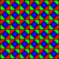
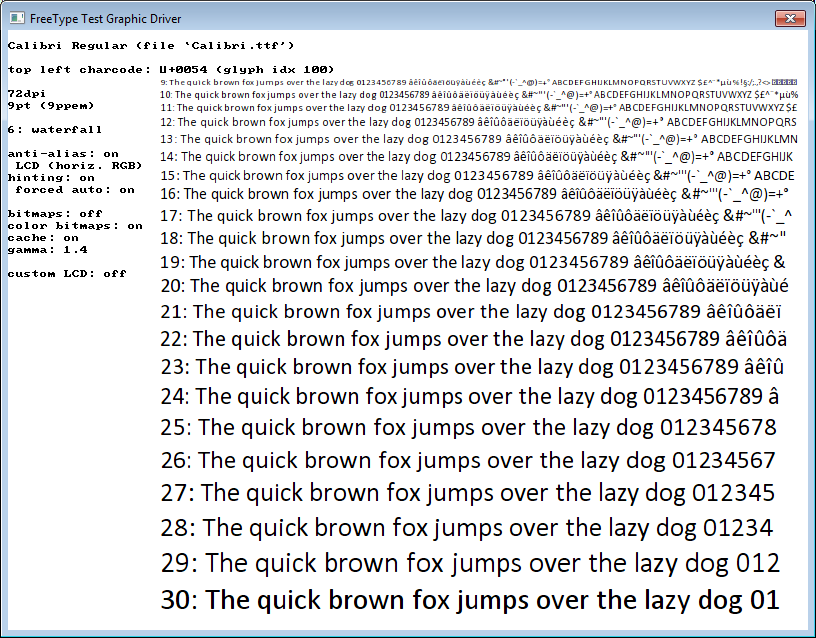
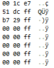
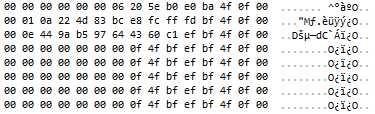

EAText supports sub-pixel text antialiasing via FreeType's LCD subpixel hinting. Using it is the same as using other kinds of fonts, though implementing it typically requires a fragment shader that has support for it. Microsoft has patented parts of this under the name of ClearType, and so when we refer to ClearType below, we are referring to Microsoft's implementation of sub-pixel anti-aliasing. We will henceforth abbreviate sub-pixel antialiasing as SubPixelAA.
You need to enable this option in FreeType via defining FT_CONFIG_OPTION_SUBPIXEL_RENDERING in ftoption.h or globally. However, beware that this functionality is partially patented by Microsoft until the year 2019 via ClearType, and you must officially license it from Microsoft to use it. As of this writing we are negotiating with Microsoft on this.
EAText enables SubPixelAA via the kOptionSubPixelAA option. You can set this option on individual OutlineFont objects via (e.g.) Font::SetOption(kOptionSubPixelAA, kSCT_LCD_H_RGB) and you can enable it by default for FontServer-created fonts via FontServer::SetOption(kOptionSubPixelAA, kSCT_LCD_H_RGB). If you enable kOptionSubPixelAA then the enabled Outline Font will automatically generate glyphs that are 24 bit RGB encoded as per the documentation for the type. It's up to the graphics engine to convert those to a glyph cache texture entry, though EAText has some default converters.
SubPixelAA support is specific to the type of screen being used, as it depends on the design of the pixels on the screen. This creates some potential runtime problems for executing applications which might have to determine what kind of screen is available.
/// ScreenColorType /// Specifies how color pixels are implemented on the screen. enum ScreenColorType { kSCT_Unknown, /// Display is known to not be LCD, for example. kSCT_LCD_H_RGB, /// Horizontal R, G, B. Most desktop LCD displays are like this. kSCT_LCD_H_BGR, /// Horizontal B, G, R. A desktop display rotated 180 degrees would be like this. kSCT_LCD_V_RGB, /// Vertical R, B, B. Desktop LCD displays rotated 90 degrees clockwise would be like this. kSCT_LCD_V_BGR, /// Vertical R, B, B. Desktop LCD displays rotated 90 degrees counter-clockwise would be like this. kSCT_LCD_Other /// Display is LCD but not a linear color type (e.g. PenTile). };
A shader is required which handles glyph textures with SubPixelAA support. Typically this is something specific to each graphics engine. You may also need to supply glyph cache support for three channel textures. We discuss this more specifically below.
We are currently (February 2014) working towards understanding the licensing requirements for ClearType. If you need to know more then talk to the EA legal team via the Legal IP Team @ EAHQ mailing list. However, it's important to be sure that you don't publish any software that uses SubPixelAA until you are sure that IP (intellectual property) issues are resolved.
SubPixelAA is a form of anti-aliasing that works at the sub-pixel level. It works by using the individual red, green, and blue components of an LCD screen pixel as if they were independent pixels. Consider that an LCD screen when viewed very magnified looks somewhat like this:
When glyphs are drawn with SubPixelAA, they are drawn with variable amounts of coloring in each pixel component:
The following demonstrates size 14 Arial drawn with SubPixelAA, with regular anti-aliasing, and without anti-aliasing. On most LCD monitors the top row (SubPixelAA) will look the smoothest, but it may also show coloring around the edges of the glyphs. The larger the text, the less it needs SubPixelAA, and very large text (>= size 80) may not need any anti-aliasing at all.
The picture below consists of the same text drawn at Arial size 9. The top row is the smoothest of the three and is evenly weighted, but it clearly shows a discoloring that makes it look like the text is not black. The second row is fairly smooth but demonstrates how anti-aliasing has problems with very small text, as the font size is too small for anti-aliasing to look good with some of the letters (e.g. w, s, k). The third row looks very crisp, though slightly blocky. The reason it looks so crisp is that this font (Microsoft Arial) has extensive hinting (desribed in the next section) built into it. The bottom row has no no anti-aliasing nor hinting and looks the worst. It is unacceptable for commercial applications and demonstrates why hinting is so important for smaller sized fonts.
ClearType Anti-Aliasing Hinting No hinting or anti-aliasing
The http://en.wikipedia.org/wiki/Subpixel_rendering page has more information about this.
SubPixelAA as implemented by EAText through FreeType supports computer displays that have horizontally consecutive RGB sub-pixels. Nearly all consumer LCD computer monitors are like this. Some televisions are like this, but not all. Phone and Tablet displays often don't have this kind of screen pixel arragement and often have things like PenTile displays.

PenTile display
When an LCD screen is rotated 90 degrees (as some displays support), the horizontal orientation becomes vertical and the anti-aliasing
SubPixelAA is supported under EAText with TrueType and related outline font types (e.g. .ttf, .ttc, .otf). EAText Effects do not currently support sub-pixel anti-aliasing, though that may be an option in the future. Some TrueType fonts work better than others, but most yield decent results. If you create a font with an effect then SubPixelAA will be disabled. Bitmap fonts (e.g. EATextBmpFont) don't explicitly support SubPixelAA but a 24 bit bitmapped font could be constructed that's pre-built with SubPixelAA encoding. If you are interested in doing this then let us know.
In order to test sub-pixel anti-aliasing we provide the FreeType ftview.exe applet, which lets you experiment with glyph drawing parameters directly out of FreeType. This applet is in the EAText tools directory and runs on Windows 32 and 64 bit platforms. Use F1 at runtime to see a list of options to control the settings. The controls in this app directly correspond to FreeType-level options, which are mostly exposed by EAText by EAText-level options.

SubPixelAA works on many televisions but doesn't work quite as well as it does on desktop monitors. There are a number of factors here:
Our tests have shown that SubPixelAA on modern LCD/Plasma televisions doesn't look much sharper, but does have better and more consistent glyph weighting.
When SubPixelAA is enabled, the EAText OutlineFont::RenderGlyphBitmap function generates a bitmap which is an opacity map like with regular AA glyphs, but is three times as wide (24bpp instead of 8bpp) and and with three times the detail. For example, here's a memory view of the "1" glyph with regular 8bpp opacity:

Here's the same 1 glyph drawn with SubPixelAA 24bpp opacity:

This needs to be directly converted into an RGB texture in the glyph cache. Each RGB triplet above maps to one texel in the texture, and as usual each texel in the texure maps to a pixel on the screen 1:1. While there are 24 bits of information above for each texel, you could conceivably reduce that to 16 bit (e.g. 565) to save space. The opacity of the texel would be calculated by the fragment shader and is typically the average of the three values, though a more advanced algorithm could yield improved results.
The freetype-gl project has an example vertex and fragment OpenGL shader that is applicable to EAText-based SubPixelAA.
The vertex shader is straightforward:
uniform sampler2D texture;
uniform vec3 pixel;
uniform mat4 model;
uniform mat4 view;
uniform mat4 projection;
attribute vec3 vertex;
attribute vec4 color;
attribute vec2 tex_coord;
attribute float agamma;
varying float vgamma;
void main()
{
vgamma = agamma;
gl_FrontColor = color;
gl_TexCoord[0].xy = tex_coord.xy;
gl_Position = projection*(view*(model*vec4(vertex,1.0)));
}
The fragment shader is a little more involved. The following is similar to the shader that freetype-gl uses, though we are looking into coming up with something better because the shader below seems to not have as much AA effect as it should.
uniform sampler2D texture;
uniform vec3 pixel;
varying float vgamma;
void main()
{
vec2 uv = gl_TexCoord[0].xy;
if(pixel.z == 1.0) // If there is just 1 byte per pixel...
{
float a = texture2D(texture, uv).r;
gl_FragColor = gl_Color * pow(a, 1.0/vgamma);
}
else // Else do SubPixelAA.
{
vec4 current = texture2D(texture, uv);
vec4 previous = texture2D(texture, uv+vec2(-1.,0.)*pixel.xy);
current = pow(current, vec4(1.0/vgamma));
previous= pow(previous, vec4(1.0/vgamma));
float r = current.r;
float g = current.g;
float b = current.b;
float t = max(max(r,g),b);
vec4 color = vec4(gl_Color.rgb, (r+g+b)/3.0);
color = t*color + (1.0-t)*vec4(r,g,b, min(min(r,g),b));
gl_FragColor = vec4(color.rgb, gl_Color.a*color.a);
}
}
In addition to the topic of sub-pixel antialiasing there is the concept of sub-pixel positioning. In that case glyphs are placed on fractional pixel positions along the text baseline. There are three primary ways of accomplishing this graphically: